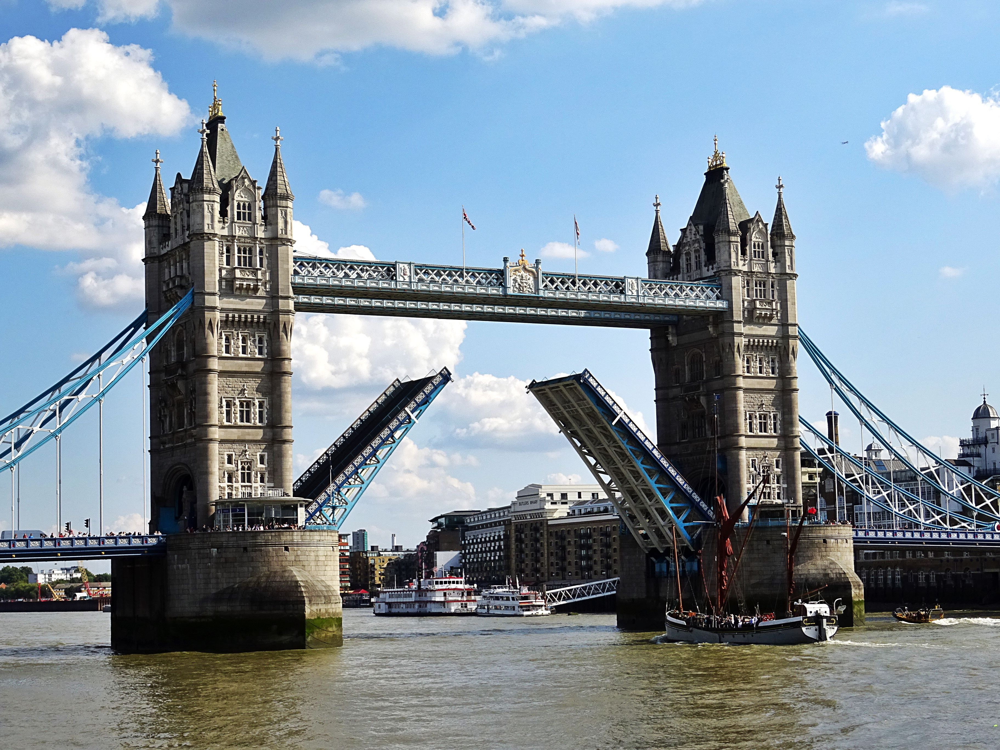

London, United Kingdom
London is the capital city of England-the United Kingdom. and It is the most populous city in the United Kingdom, with a metropolitan area of over 13 million inhabitants. Standing on the River-Thames, London has been a major settlement for two millennia, its history going back to its founding by the Romans, who named it Londinium. London's ancient core, the City of London, largely retains its 2.9 km2 mediaeval boundaries and in 2011 had a resident population of 7,375; making it the smallest city in England. Since at least the 19th century, the term London has also referred to the metropolis developed around this core. The bulk of this conurbation forms the Greater London administrative area (coterminous with the London region) , governed by the Mayor of London and the London Assembly.
Movable bridge of London
The bridge was completed in 1894. It is about 240 metres (800 feet) in length and provides an opening 76 metres (250 feet) wide.Its twin towers rise 61 metres (200 feet) above the Thames. Between the towers stretch a pair of glass-covered walkways that are popular among tourists. The walkways were originally designed to allow pedestrians to cross even while the bridge was raised, but they became hangouts for prostitutes and thieves and so were closed from 1909 to 1982. The Tower Bridge was operated by hydraulic pumps driven by steam until 1976, when electric motors were put into operation; the steam power system is still kept (in good repair) as a tourist display. Because of the reduction in shipping at the Docklands, however, the leaves are now seldom raised.